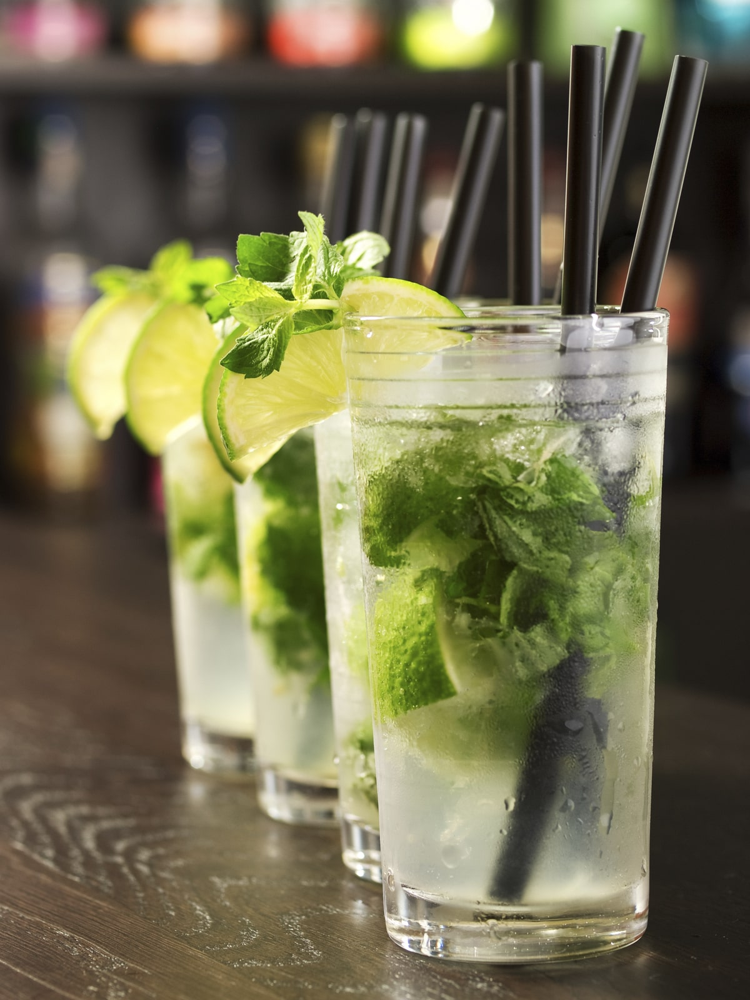
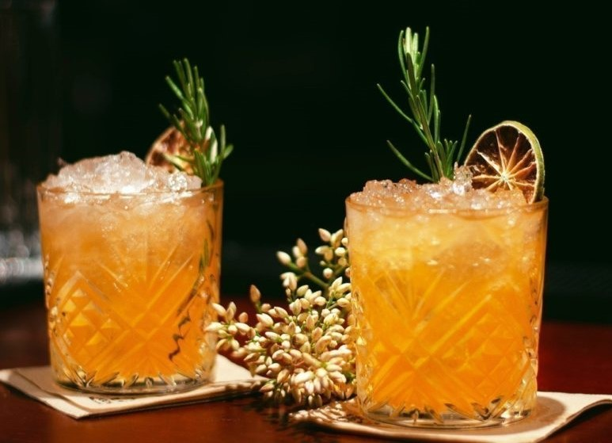
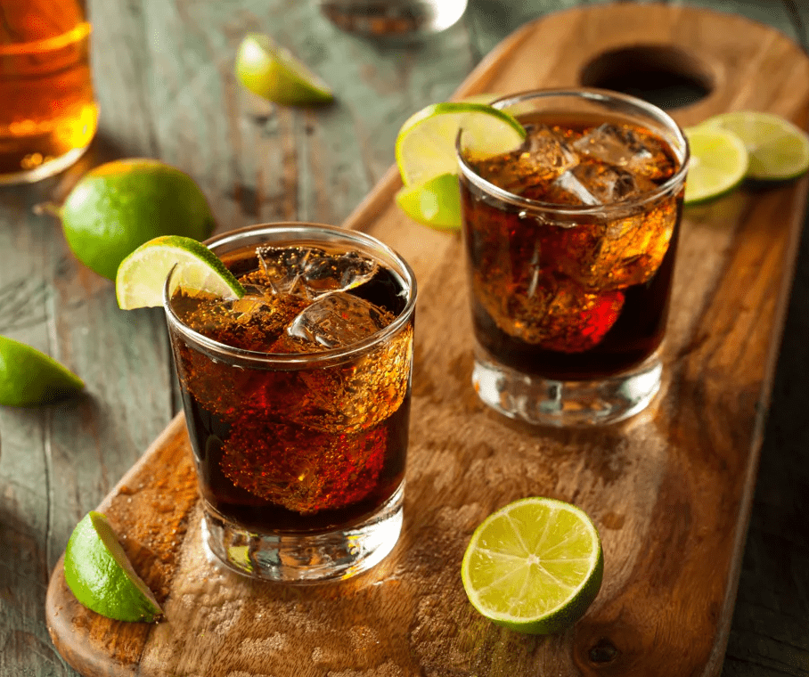
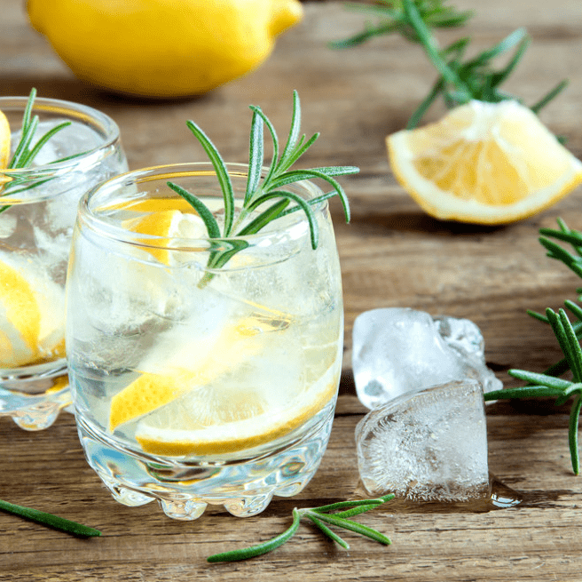
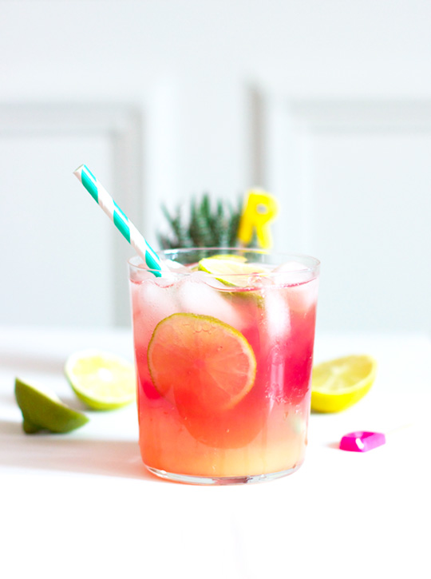
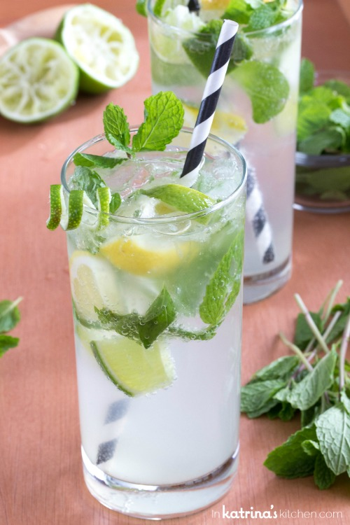
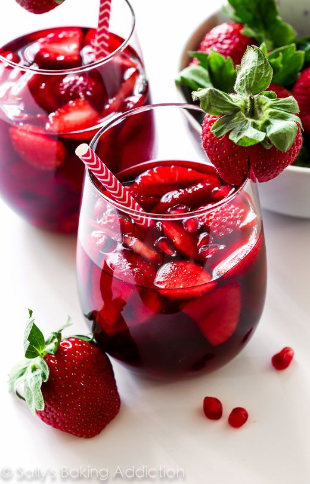
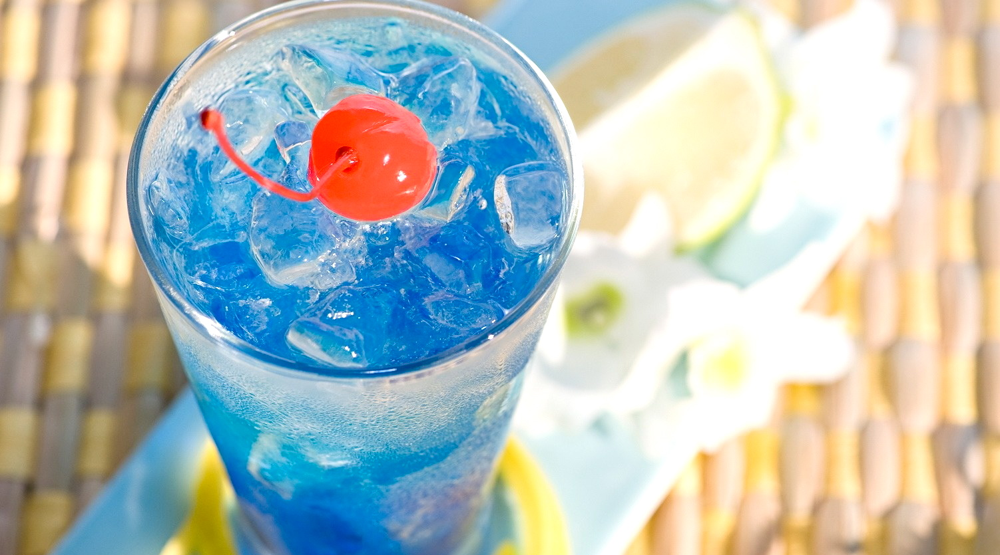
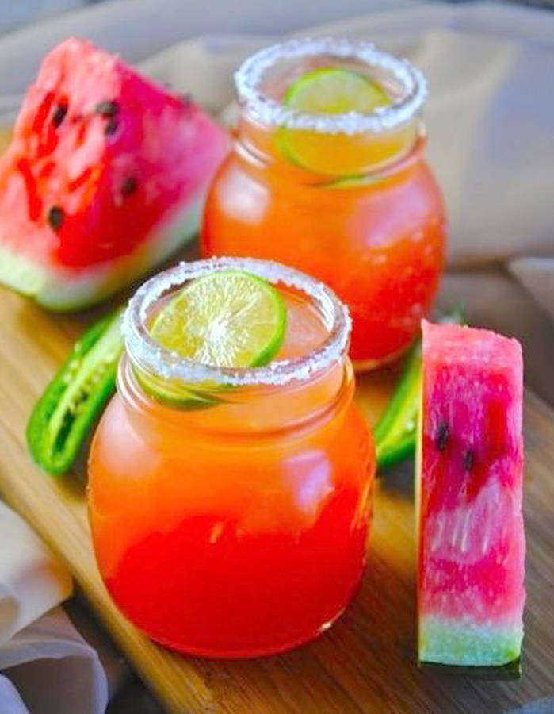

Notre selection des meilleurs cocktails avec alcool
Le Mojito
Le mojito est un cocktail traditionnel de la cuisine cubaine et de la culture de Cuba, à base de rhum, de soda, de citron vert, et de feuilles de menthe fraîche. Inspiré du mint julep, et variante des Ti-punch des Antilles, Daïquiri, et Cuba libre, il est né à Cuba dans les Caraïbes dans les années 1910 (dont il est à ce jour un emblème exotique international).
Le Sex on the Beach
Sex On The Beach est un cocktail classique parfait pour une chaude journée d'été grâce à la combinaison rafraîchissante de schnapps à la pêche, de vodka et de jus de fruits.
Le Punch
Le punch est un cocktail contenant la plupart du temps des fruits en morceaux et le jus de ces fruits. Classiquement, le punch est servi dans un bol appelé le bol à punch. Le punch a généralement l'avantage de contenir un pourcentage plus faible d'alcool que les cocktails, les vins ou les bières. Bien dosé, il est donc un breuvage de choix pour garder le contrôle lors de soirées arrosées.
La Tequila sunrise
Le tequila sunrise est un cocktail à base de tequila, de jus d'orange, et de grenadine qui au fond du verre donne l'effet d'un lever de soleil (sunrise) ce qui a inspiré le nom de la boisson.
La Piña Colada
La piña colada est un cocktail à base de rhum, jus d'ananas et crème de noix de coco, originaire de l’île de Porto Rico. Le nom piña colada signifie littéralement « ananas filtré » en espagnol, en référence au jus d'ananas fraîchement pressé et filtré utilisé dans la préparation de la boisson.

Le Ti Punch
Le ti-punch ou ti-ponch est un cocktail à base de rhum, de citron vert, et de sirop de batterie, de sucre roux de canne, ou sirop de canne à sucre. Cette boisson se boit sans glaçon car d’après les locaux le mal de tête viendrait des glaçons. Le terme “Ti’ punch” signifie littéralement “petit coup de poing”!
Le Cuba Libre
Le Cuba libre, ou rhum-Coca est un cocktail à base de rhum, citron vert, et cola.
La Margarita
La Margarita est un cocktail à base de tequila, inventé par des Américains au Mexique. Les ingrédients de la Margarita sont la tequila, le triple sec et le jus de citron vert pressé. Les Margaritas peuvent avoir des couleurs différentes selon les fruits employés (fraises, tamarins, etc.)
Le Gin Tonic
Le gin tonic est un cocktail alcoolisé à base de gin et d'eau tonique, parfois accompagné avec une tranche de citron ou de citron vert, et servi avec de la glace. Les amateurs éclairés le dégusteront avec une tranche de concombre.
Le Blue Lagoon
Le Blue Lagoon est un cocktail à base de vodka, de curaçao bleu et de jus de citron. Il est aussi appelé le « lagon bleu » par sa traduction. Reconnaissable entre tous les cocktails grâce à sa couleur bleu vif, le Blue Lagoon se déguste frais. Vous pouvez donc rafraîchir le verre avant d'y verser le cocktail.
Notre selection des meilleurs cocktails sans alcool
Le Rio
Rafraîchissant et très coloré, le cocktail Rio vous fera voyager au Brésil… dépaysement assuré ! Il est contitué de jus d'orange, de limonade, de granadine et de citron vert.
La limonade à la framboise
Apportez une touche de fantaisie à votre verre avec ce délicieux cocktail aux couleurs rosées : vous allez l’adorer ! Il est constitué de framboises, de jus de citron, de limonade et de sucre de canne.
Le virgin mojito
Le virgin mojito est une excellente alternative pour tous ceux qui ne boivent pas d’alcool ! Il est constitué de feuilles de menthe fraîches, de citron vert et jaune, d'eau gazeuse et d'agave.
La pink Margarita
Cette pink Margarita revisitée sans alcool tout en légèreté va vous donner des ailes ! À tester absolument ! Il est constitué d'eau, de sucre, de jus de citron, de jus de cranberry, de zeste de citron et de rondelles de citron.
Le jus de fraises et basilic
Un cocktail simple et original pour des soirées mémorables ! Il est constitué de fraises, de feuilles de basilic, de jus d'orange et de sucre en poudre.
La piña colada
Cette version sans alcool du célèbre cocktail portoricain est tout aussi délicieuses que l’originale : vous allez vous régaler ! Il est constitué de jus d'ananas, de lait de coco et de sucre de canne.
Le blue lagoon
Un autre classique des cocktails revisité sans alcool, et une recette simplissime ! Il est constitué de jus de pamplemousse, de boisson gazeuse comme du schweppes et du sirop de menthe.
L'apple rose
Une boisson rose très gourmande et tout simplement irrésistible ! Il est constitué de sirop de framboise, de jus de pomme et de schweppes au citron.
Le jus de pastèque, de citron vert et de cranberry
Un cocktail simple à faire qui va vous rendre accro ! Il est constitué de morceaux de pastèque, de citron vert, de jus de cranberry et d'eau pétillante.
Le cocktail exotique au litchi, au citron vert et à la fleur de sureau
Ce cocktail rose bonbon est aussi original que délicieux ! Il est constitué de litchis, de jus de citron vert, de jus de fleur de sureau et d'eau pétillante.